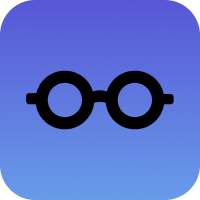
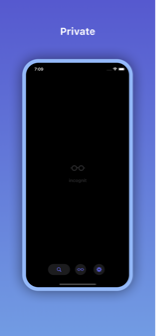
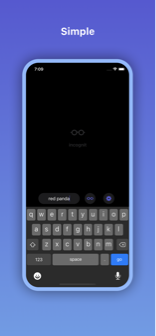

incognit

The most secure and private browser.
Other browsers claim to be private but they are still tracking your interaction, even if they do it on an anonymous way. Not us, we don't record/track/analytics/remember/share/footprint anything.
Other ad blockers allow their own partners to display ads on the sites you visit. Not us, we block everyone, and our ad blocking system is continuously growing and improving.
Other apps look away while tracking systems are profiling you for browsing the web. Not us, we block all of them, this not only increases your privacy and security, but also enhances loading speeds of websites dramatically.
Our motto is Browse and Forget.
Add incognit home widget so you can browse and search directly from home.
Install incognit Apple Watch app so that you can have a remote controller for when you need to forget everything but you don't have your phone at hand.
We provide 2 search engines:
- Ecosia: The search engine that plants trees
- Google: The other search engine
Disclaimer: This app is completely independent of Ecosia and independent of Google too. No relation with any of them.
Features
- Incognito mode always on
- Anti tracking protection
- Ad blocking
- Cookies blocking
- Pop-up blocking
- Safe browsing
- 2 search engines to choose from
- Home widget for quick access
- Apple Watch app for remote controlling

Pricing
- No ads
- No subscriptions
- No tracking
- No data sharing with anyone
- No connecting to any server
- No remembering anything
Privacy Policy
This app is not tracking you in anyway, nor sharing any information from you with no one.
Whatever you do with this app is up to you and we don't want to know about it.